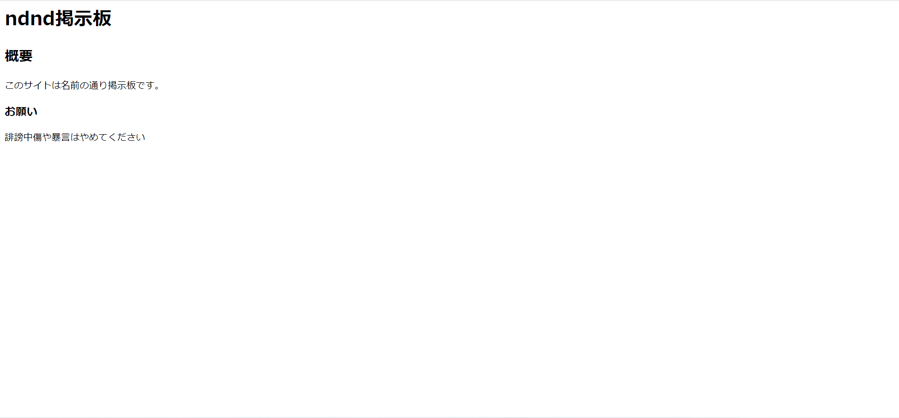
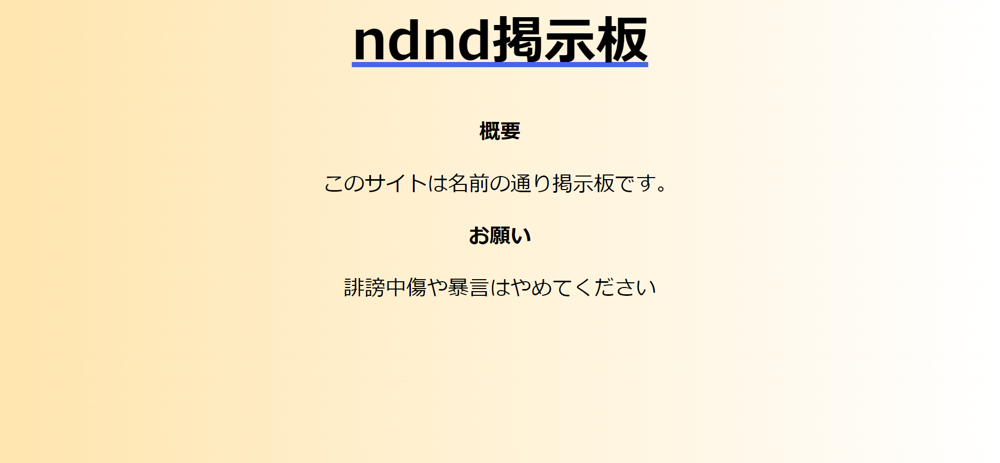
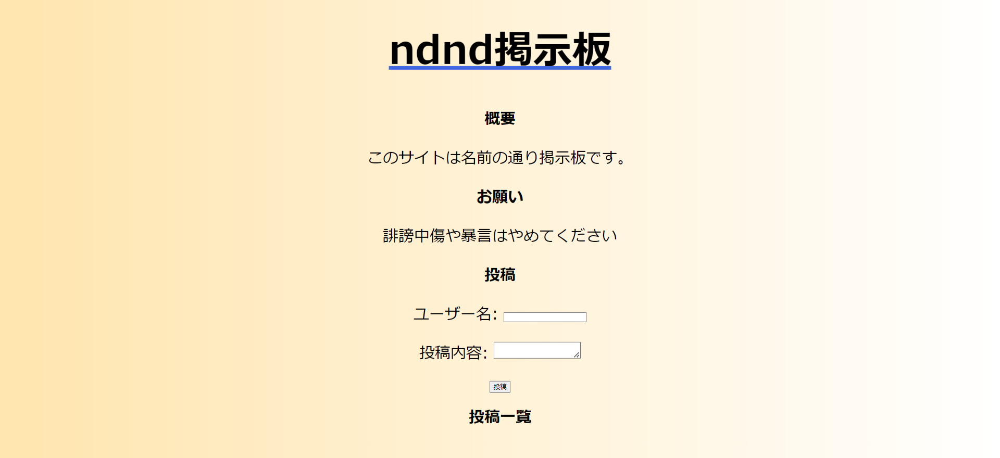

78回生 nisnah
78回生のnisnahです。気づけばもう学校生活の1/3が終わっていました。時の流れってはやいですね。それなのにまだあまり進捗が生やせていないことに焦りを感じています。そこで、webアプリというものを作ってみます。
今回は、私の技術と時間が足りず、最後まで作り切ることはできませんでした。それでもよろしい方は読んでいただけると幸いです。
部誌のsample版の図7.1の<DOCTYPE! html>は<!DOCTYPE html>で、図7.1と図7.4の画像の<title>nada掲示板</title>のところは正しくは<title>ndnd掲示板</title>でした。
webアプリとは、ウェブなどのネットワークから利用するアプリです。また、webアプリには、よく比較されるものとしてネイティブアプリというものがあります。ネイティブアプリとは、手元の機器にインストールして使うアプリです。
今回作るwebアプリは「ndnd掲示板」です。名前の通り掲示板として使えます。(とりあえず形にしたので稚拙な部分があるかもしれません…)スレッドにタグをつける機能などをつけます。
今回は、windowsでメモ帳を使って作っていきます。htmlファイルをメモ帳で開くときはファイルを選択し右クリックして、「プログラムから開く」からメモ帳をクリックすれば開けます。cssファイルをメモ帳で開くときはダブルクリックすれば開けます。
最初に、フォルダを適当な名前で作り、その中にindex.htmlというファイルを作ります。そしてindex.htmlをメモ帳を開いて、下のコードを記述します。
リスト5.1:
<!DOCTYPE html>
<html lang="ja">
<head>
<meta charset="UTF-8">
<title>ndnd掲示板</title>
</head>
<body>
<h1>ndnd掲示板</h1>
<h2>概要</h2>
<p>このサイトは名前の通り掲示板です。</p>
<h3>お願い</h3>
<p>誹謗中傷や暴言はやめてください</p>
</body>
</html>
これはHTMLというマークアップ言語(プログラミング言語とは違う！)によって書かれたものです。これがwebアプリの土台となります。
軽くだけ説明すると、<!DOCTYPE html>でhtml文書のだと宣言されています。そして、<head>タグの中身にはwebサイトに表示されない設定が、<body>タグの中身にはwebサイトに表示される文書が記述されています。
ここで、上書き保存をし、ファイルをクリックして開くと画像のようになります。

図5.1:
(。´・ω・)ん?と思いましたよね？何か味気ないなあと。それは、CSSファイルを作っていないからです。CSSとはHTMLで書かれた文書の見た目を装飾することのできるスタイルシート言語です。ということで、CSSファイルを作っていきます。まず、先ほど作った適当な名前を付けたフォルダの中に、style.cssというファイルを作ります。そしてstyle.cssをメモ帳で開き、下のコードを記述します。
リスト5.2:
@charset "UTF-8";
body
{
background: linear-gradient(90deg,#FFE5AE,#FFFFFF);
}
h1
{
font-size: 500%;
text-align: center;
text-decoration:underline;
text-decoration-color:#4169e1;
}
h2,h3,p
{
font-size: 200%;
text-align: center;
}
これを大まかに説明すると、font-sizeで文字の大きさを、text-alignで文字の位置を設定し、text-decorationでデコレーションを設定し、text-decoration-colorでそのデコレーションの色を決定しています。
記述出来たら、上書き保存をします。その次に、index.htmlをメモ帳で開き、<title>ndnd掲示板</title>の下に下のコードを記述します。
リスト5.3:
<link rel="stylesheet" href="style.css">
これを書くことでindex.htmlにstyle.cssが適用されます。
またまた上書き保存をし、index.htmlを開くと…

図5.2:
なんと、先ほどよりカラフルにいい感じになりました！このほかにも、HTMLファイルの中にCSSを記述する方法などもあります。ここまでで、掲示板のトップページのおおよその見た目が完成しましました
ここからは掲示板を作っていきます。
まず、<p>誹謗中傷や暴言はやめてください</p>の下に下のコードを書きます
リスト5.4:
<form>
<p>ユーザー名: <input type="text" id="user"></p>
<p>投稿内容: <textarea id="toukounaiyou"></textarea></p>
<div align="center"><button type=”button” id="btn" onClick="myfanc()">投稿</button></div>
</form>
<h2>投稿一覧</h2>
<div align="center" id="naiyou"><p></p></div>
そして、HTMLファイルを開くと下のようになります。(全体を移すために縮小しています)

図5.3:
これで投稿するフォームの原型と投稿した後にその投稿を表示する場所が出来上がりました。
今回はこれで終わりです。最後まで作りきれず、申し訳ございませんでした。
【図解】WEBアプリケーションとは？仕組みと開発言語を 解説！ - カゴヤのサーバー研究室(https://www.kagoya.jp/howto/it-glossary/web/webapplication/)